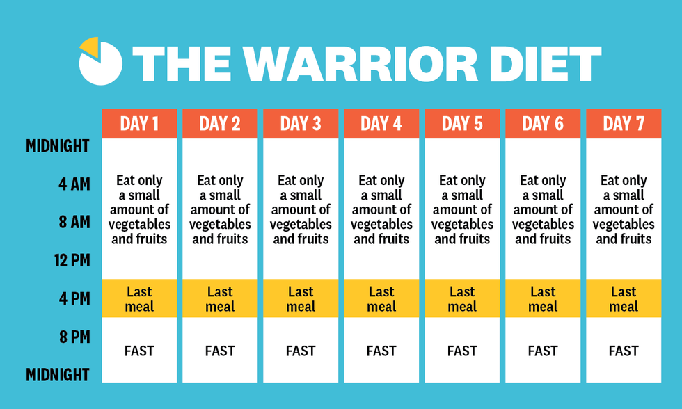
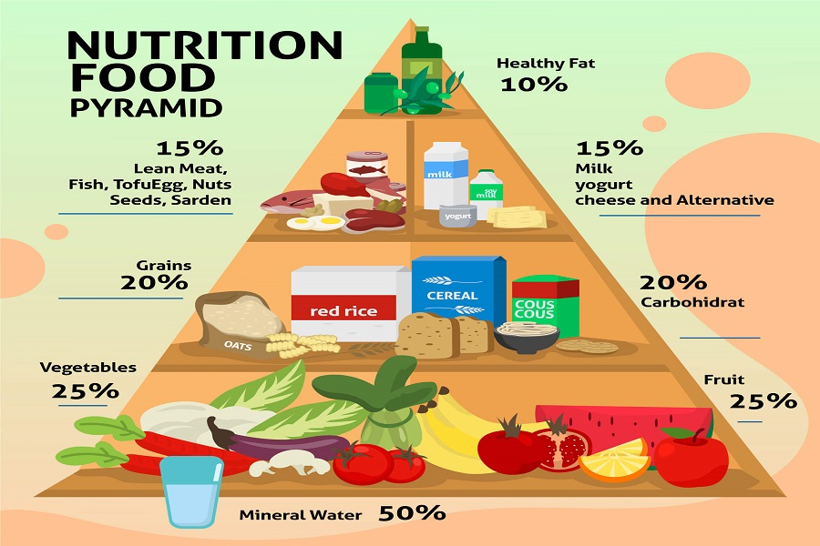

Why is it important to talk about PCOD in women's life
Talking about Polycystic Ovary Syndrome (PCOS) in women is important for several reasons:
- Health Awareness: Many women may not be aware that they have PCOS, or they may not understand its implications on their health. Talking about PCOS in the workplace can raise awareness and encourage women to seek medical advice if they experience symptoms like irregular periods, weight gain, or excessive hair growth.
- Workplace Support: PCOS can affect various aspects of a woman's life, including her work performance and productivity. By discussing PCOS openly, workplaces can create a supportive environment where affected women feel comfortable seeking accommodations or support if needed.
- Impact on Health and Well-being: PCOS can have significant effects on physical health, mental health, and overall well-being.
- Mental Health: PCOS is often associated with mental health issues such as depression, anxiety, and poor self-esteem due to its effects on appearance and fertility. Discussing PCOS in the workplace can help reduce stigma and provide opportunities for women to access mental health support if necessary.
- Work-Life Balance: Managing PCOS symptoms such as fatigue, mood swings, and chronic pain can be challenging, especially for working women juggling multiple responsibilities. By discussing PCOS openly, workplaces can promote understanding and flexibility, allowing affected women to better manage their work-life balance.
- Advocacy and Policy Change: Open discussions about PCOS in the workplace can contribute to advocacy efforts and policy changes aimed at improving healthcare access, insurance coverage, and workplace accommodations for women with PCOS.
At a Glance
How PCOD affects women's life?
1. Menstrual Irregularities: PCOD often causes irregular menstrual cycles, which can be inconvenient and may lead to absenteeism or reduced productivity at work. 2. Infertility: PCOD is a common cause of infertility in women. Dealing with fertility issues can be emotionally challenging, especially for women who are trying to balance work and family life. 3. Weight Gain: Many women with PCOD experience weight gain or have difficulty losing weight. This can affect self-esteem and confidence, which can impact performance at work. 4. Fatigue: PCOD can cause fatigue and low energy levels, making it difficult to stay focused and productive at work. 5. Emotional Impact: Dealing with the symptoms of PCOD, such as irregular periods, acne, and excess hair growth, can take a toll on a woman's emotional well-being. This can affect relationships with colleagues and performance at work. 6. Managing Symptoms: Managing PCOD often requires lifestyle changes, such as following a healthy diet, exercising regularly, and taking medications. Balancing these changes with work responsibilities can be challenging. 7. Increased Risk of Other Health Issues: Women with PCOD are at an increased risk of developing other health issues, such as type 2 diabetes, high blood pressure, and heart disease. Managing these additional health concerns alongside work can be overwhelming.
Diet Plan for working women
For women with PCOD, it's important to focus on a balanced diet that helps manage symptoms and supports overall health. Here's a general diet plan that you can consider:
- Moderate Caffeine Intake: While caffeine can provide a temporary energy boost, excessive consumption can lead to jitters, anxiety, and disrupted sleep. Limit your intake of caffeinated beverages and consider switching to decaffeinated options later in the day.
- Protein: Include lean protein sources like chicken, fish, eggs, legumes, and tofu to support muscle health and keep you full.
- Healthy Fats: Include sources of healthy fats like avocados, nuts, seeds, and olive oil to support hormone production and reduce inflammation.
- Fruits and Vegetables: Eat a variety of colorful fruits and vegetables to get essential vitamins, minerals, and antioxidants.
- Limit Sugary Foods and Beverages: Minimize consumption of sugary foods and drinks to help regulate insulin levels.
- Limit Processed Foods: Avoid or minimize processed foods, as they can contribute to inflammation and hormonal imbalances.
- Balance Work and Social Eating: Be mindful of workplace social events and meals out with colleagues. Enjoy these occasions while making balanced choices and being mindful of portion sizes.
- Regular Meals: Try to eat regular, balanced meals to help maintain stable blood sugar levels.
- Snack Wisely: Opt for healthy snacks like fruits, nuts, yogurt, or whole grain crackers to keep you energized between meals.


Leadership and Counseling for PCOD
Leadership and counseling for women with PCOD can make a significant difference in how they manage their condition and overall well-being. Here are some key points related to the best leadership and counseling approaches for students with PCOD:
- Empowerment: Empower women with PCOD by providing them with information about their condition.
- Lifestyle Modification: Encourage women with PCOD to make healthy lifestyle choices.
- Counseling and Mental Health Support: PCOD can have a significant impact on mental health, leading to stress, anxiety, and depression.
- Education and Awareness: Raise awareness about PCOD among women, educators, and the broader community.
- Collaboration with Healthcare Providers: Work closely with healthcare providers to ensure that students with PCOD receive the appropriate medical care and support.
- Promote Self-care: Encourage women with PCOD to prioritize self-care and make time for activities that promote their physical and mental well-being.
Medicines
Polycystic ovary syndrome (PCOS) is a hormonal disorder common among women of reproductive age. While there isn't a cure, medications can help manage symptoms. Here are some commonly prescribed medications:
- Birth Control Pills: Oral contraceptives can regulate menstrual cycles and lower levels of male hormones, reducing symptoms like excess hair growth and acne.
- Anti-androgen Medications: Spironolactone is commonly used to block the effects of androgens (male hormones) and can help reduce acne and excess hair growth.
- Metformin: This medication is typically used to treat type 2 diabetes, but it can also help regulate menstrual cycles and improve insulin resistance in women with PCOS.
- Clomiphene: This fertility medication can help induce ovulation in women who are trying to conceive.
- Letrozole: Similar to Clomiphene, Letrozole is another medication used to induce ovulation in women with PCOS who are trying to get pregnant.
- Gonadotropins: In some cases, injectable medications called gonadotropins may be used to stimulate ovulation.
It's essential to consult with a healthcare provider who can tailor a treatment plan to your specific needs and monitor your progress.
Exercises
Exercise is an important component of managing PCOS as it can help improve insulin sensitivity, regulate menstrual cycles, manage weight, and reduce symptoms such as excess hair growth and acne. Here are some exercises that can be beneficial for women with PCOS:
- Birth Control Pills: Oral contraceptives can regulate menstrual cycles and lower levels of male hormones, reducing symptoms like excess hair growth and acne.
- Cardiovascular Exercises: Activities that get your heart rate up, such as brisk walking, jogging, cycling, swimming, dancing, or aerobics, can help burn calories and improve cardiovascular health. Aim for at least 150 minutes of moderate-intensity aerobic exercise per week, or 75 minutes of vigorous-intensity exercise.
- Strength Training: Incorporating resistance exercises, such as weightlifting or bodyweight exercises like squats, lunges, push-ups, and planks, can help build muscle mass and boost metabolism. Aim to include strength training exercises at least two days a week.
- Interval Training: High-intensity interval training (HIIT) involves alternating between short bursts of intense activity and brief periods of rest or lower-intensity exercise. HIIT can be an efficient way to burn calories and improve fitness levels in a shorter amount of time.
- Yoga: Yoga can help reduce stress levels, improve flexibility, and promote relaxation. Certain yoga poses may also help regulate hormone levels and improve ovarian function. Poses like child's pose, cobra pose, cat-cow pose, and seated forward bend can be particularly beneficial.
- Pilates: Pilates focuses on strengthening the core muscles, improving posture, and enhancing overall body awareness. It can be a low-impact exercise option that helps build strength without putting excessive stress on the joints.
- Circuit Training: Circuit training involves moving through a series of different exercises targeting different muscle groups with minimal rest in between. It can help improve cardiovascular fitness, build strength, and burn calories.
Remember to start slowly and gradually increase the intensity and duration of your workouts. It's also important to listen to your body and modify exercises as needed to avoid injury. Consulting with a healthcare provider or a fitness professional before starting a new exercise program is advisable, especially if you have any underlying health conditions or concerns.